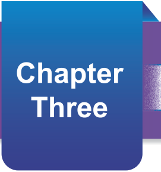
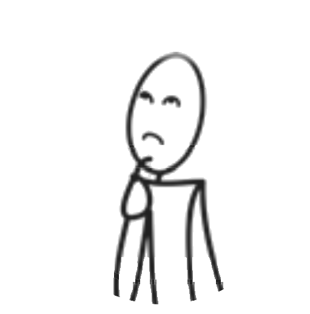

A map is one of the ways to present information about various features on the Earth’s surface. In this chapter, you will learn the concept of map drawing, features that can be presented on a map, and map symbols. Also, you will learn map scale, map drawing tools, steps of drawing simple maps and digital maps. Similarly, you will learn to draw a map of your classroom, school, ward, district, and Tanzania. The competencies developed will enable you to draw a simple map of your surroundings.

Features of the earth’s surface that can be represented on a map.
Map drawing is the art and science of representing the locations of features on the earth’s surface on paper or any flat surface. The study of map drawing is called cartography, and a person who draws maps is called a cartographer. In map drawing, symbols are used to represent features such as roads, houses, rivers, and mountains. This process emphasizes maintaining the correct proportions between the area, real objects, and the symbols placed on the map.
Maps can display various features depending on their purpose. For example, a map can present roads that lead to different places, buildings